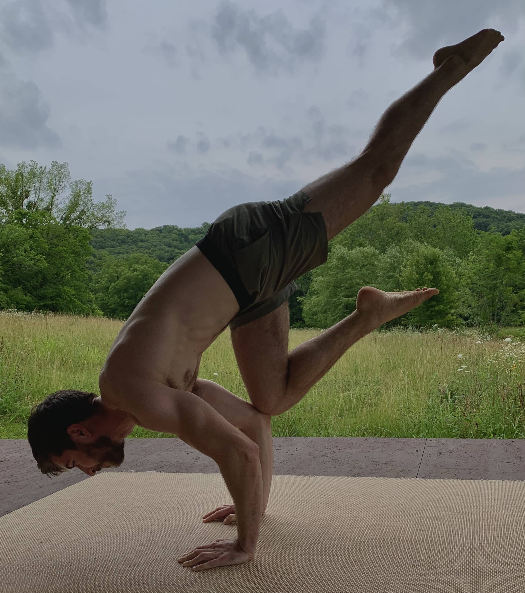

Will Lorey Yoga

I love teaching strength-building, yoga-based movement and
most of my classes can be done with just a yoga mat and minimal props.
These videos are free to use, share, and download as you see fit;
they're free as in freedom.
-
Beginner Strength Flow (30min):
Focused on building foundational yoga strength.
-
Hands-Free Flow (30min):
Focused on lower body and core. A good option if you're trying to avoid putting
pressure on the wrists.
-
Intro to Headstands (10min):
A walk-through of proper headstand form and how to get upside down safely.
-
Ladder Flow (30min):
Progressively builds a stability-focused flow with lots of vinyasas.
-
Strength Flow (30min):
Focused on building strength, especially in the arms and chest.
-
Sun Flow (30min):
A more traditional yoga class centered around sun salutations.
-
Ten Minute Torture (10min):
Focused on core and triceps.
If you're trying to wear yourself out but are short on time, this is
the way to go.
-
Ten Minute Torture 2 (10min):
Planks, chaturanga holds, planks, and more planks.
 Home
Home